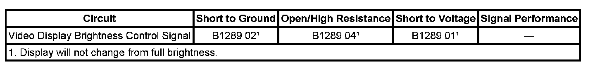

B1289
DTC B1289
DIAGNOSTIC INSTRUCTIONS
- Perform the Diagnostic System Check - Vehicle prior to using this diagnostic procedure. Initial Inspection and Diagnostic Overview
- Review Strategy Based Diagnosis for an overview of the diagnostic approach.
- Diagnostic Procedure Instructions provides an overview of each diagnostic category.
DTC DESCRIPTORS
DTC B1289 01
Video Display Brightness Control Signal Short to Battery
DTC B1289 02
Video Display Brightness Control Signal Short to Ground
DTC B1289 04
Video Display Brightness Control Signal Open
Diagnostic Fault Information:

DIAGNOSTIC FAULT INFORMATION
CIRCUIT/SYSTEM DESCRIPTION
The radio can control the video display brightness on vehicles equipped with rear seat entertainment (RSE) video. The radio varies a pulse with modulated (PWM) signal to the rear entertainment video screen to command the screen brightness.
CONDITIONS FOR RUNNING THE DTC
The following are conditions that must be present in order for the radio to enable the diagnostics.
- The radio is in ACCESSORY, RUN, or RAP power mode.
- The system voltage is at least 9 volts and no more than 16 volts.
CONDITIONS FOR SETTING THE DTC
Circuit failure 400 ms after radio activates Remote Enable.
ACTION TAKEN WHEN THE DTC SETS
Radio sets the DTC and defaults the video display to Full Brightness mode.
CONDITIONS FOR CLEARING THE DTC
- The condition must be corrected.
- A history DTC clears after 100 malfunction-free ignition cycles.
- The radio receives the clear code command from the scan tool.
CIRCUIT/SYSTEM VERIFICATION
Verify the video will change display.
CIRCUIT/SYSTEM TESTING
Without Third Row Display
1. Ignition OFF, disconnect the harness connector of the rear video display. Ignition ON, with a DMM verify there is 100 to 300 Hz on the video display brightness control signal circuit.
- If 100 to 300 Hz is not present on the video display brightness control signal circuit test for an open, a short to voltage, or a short to ground. If the video display brightness control signal circuit tests normal, replace the radio.
2. If 100 to 300 Hz is present and the video display brightness control signal circuit tests normal, replace the rear video display.
With Third Row Display
1. With a scan tool clear the DTC. Ignition OFF, Disconnect the third row video display. Ignition ON, verify the DTC resets.
- If the DTC does not reset, replace the third row video display.
2. Ignition OFF, disconnect the harness connector of the rear video display. Ignition ON, with a DMM verify there is 100 to 300 Hz on the video display brightness control signal circuit.
- If 100 to 300 Hz is present and the video display brightness control signal circuit tests normal, replace the front rear video display.
- If 200 Hz is not present on the video display brightness control signal circuit test for an open, a short to voltage, or a short to ground. If the video display brightness control signal circuit tests normal, replace the radio.
REPAIR INSTRUCTIONS
Perform the Diagnostic Repair Verification after completing the diagnostic procedure. Verification Tests
Control Module References for radio replacement, setup, and programming. Programming and Relearning